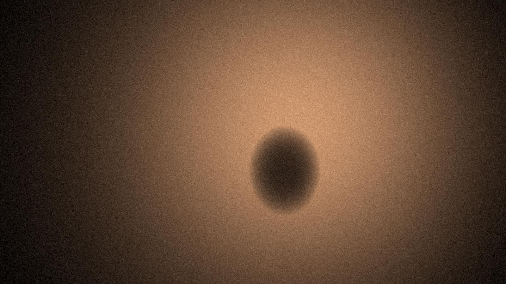

Issue 01 — Feral / Calm
Photographs with teeth.

Everyone moved. One of them didn’t.
01
Manifesto
- We don’t fix the flash.
- Grain is not noise. It is weather.
- If it looks too clean, it’s lying.
- Every picture gets one sentence. No more.
02
How to look at it
- Look before you read. Give the image five seconds on its own.
- Find the light. Ask where it came from and who it was aimed at.
- Notice what’s wrong. The blur, the burn, the bent edges are the point.
- Read the sentence. Then look again and see if it still holds.
- Disagree. Write your own and send it to us.
Look closer
Nothing here is polished. That’s the bite.